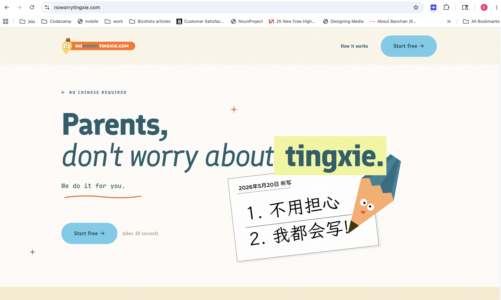

No Worry Tingxie
From a broad AI learning app to one reliable weekly tool — helping parents turn this week’s spelling list into a teacher-like practice test at home.

From a broad AI learning app to one reliable weekly tool — helping parents turn this week’s spelling list into a teacher-like practice test at home.

No Worry Tingxie is a lightweight web app that helps primary school parents support their children’s Chinese spelling practice at home. Parents snap or upload this week’s tingxie list, turn it into a practice set, and generate a teacher-like audio test so their child can prepare independently.
This grew out of Pikabook, where OCR and GPT could turn textbook photos into learning material — useful, but often met with “Can’t I just use GPT for this?” That pushed me toward a more specific, repeated use case parents already know: tingxie prep every other week.
The real problem was not another learning platform. Parents were acting as teacher, dictionary, audio player, test generator, and motivator — all at once. The bet: upload this week’s list, get a teacher-like test instantly. Not “AI turns anything into learning material,” but one weekly chore made easier.
One reliable weekly tool — not another learning platform.
I kept v1 small — no accounts, curriculum, rewards, or dashboards. Just the core weekly job: create a list, randomize the order, and play words like a real tingxie test. Accuracy before magic. Fast launch for real feedback.
The minimum value was not “upload a list.” It was “my child can now practice tingxie without me reading every word.”
A powerful feature is not the same as a sharp use case. Parents do not always want a broad AI learning system — sometimes they want one painful job handled well, especially when it already fits an existing routine.
No Worry Tingxie is moving toward a June pilot with primary school parents, and conversations with partners and investors — not as a finished platform, but as a focused v1 showing how AI supports real, recurring parent workflows.